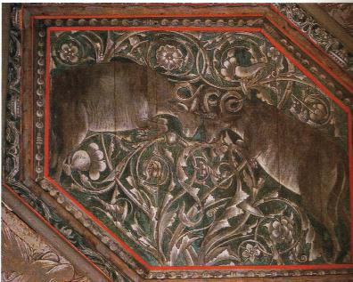
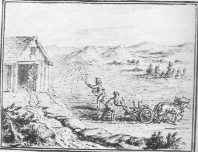
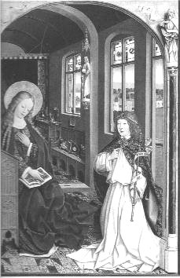
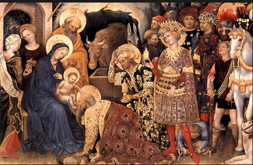
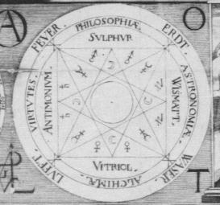
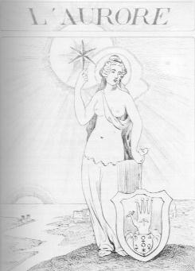
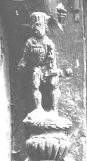
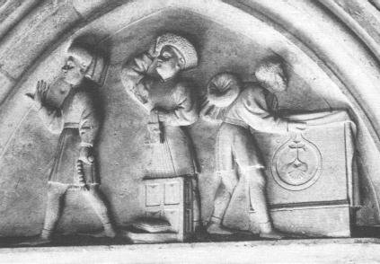

Chapitre 3 De l'acier des Sages
Les savants Mages ont transmis à leurs successeurs de nombreux enseignements au sujet de leur Acier1, et ils lui attribuèrent une importance considérable. C'est pourquoi entre les Alchimistes ce fut une grande controverse de savoir ce qu'il fallait entendre par le nom d'Acier. Chacun l'a interprété à sa manière. L'auteur de la Nouvelle Lumière2 en a parlé sincèrement, mais de façon obscure.
II
La jalousie ne me portant point à rien cacher aux investigateurs de notre Art, moi, je le décrirai sincèrement. Notre Acier est la vraie clef de notre Oeuvre3, sans laquelle le Feu de la lampe4 ne peut être allumé par aucun artifice: c'est la minière de l'or, l'esprit pur entre tous par excellence, un feu infernal, secret en son genre, extrêmement volatil, le miracle du Monde, l'assemblage harmonique des vertus des êtres supérieurs dans les êtres inférieurs. C'est pourquoi le Tout-Puissant l'a marqué de ce signe notable par lequel la nativité fut annoncée en Orient5. Les Sages le virent en Orient et ils le regardèrent, émerveillés et ils reconnurent qu'un Roi sérénissime venait de naître dans le monde.
III
Et toi, lorsque tu auras vu son étoile, suis-la jusqu'au Berceau: tu y verras un bel enfant, en le séparant de ses impuretés. Honore ce rejeton royal, ouvre son trésor pour lui offrir de l'or; et après sa mort, il te donnera sa chair et son sang6, médecine suprême pour les trois régimes de la terre.
1.De Pernety (Dom Pernety : Dictionnaire mytho-hermétique expliquant les allégories fabuleuses des philosophes hermétiques) nous précise que :"Les Adeptes disent qu’ils tirent leur acier du ventre d’Aries, et ils appellent aussi acier leur aimant ".
Dans les DM,I, p.167, on trouve une intéressante allégorie qui se rapporte indirectement à l'Acier où De Cyrano Bergerac fait parler des chênes séculaires :
" ...ils demeuroient en Epire, dans la forêt de Dodone... ".
Or, Dodone était l’un des plus anciens oracles de la Grèce. On posait au dieu suprême des questions auxquelles il répondait par l’intermédiaire des branches de chênes et l’on avait placé sur les cimes des arbres desvases d’airain qui s’entrechoquaient au moindre courant d’air. L’airain, en Alchimie, trouve sa correspondance dans l’acier ou l’aimant qui renvoient tout deux à des adjectifs tels que « inébranlable, implacable, impitoyable », rendant bien compte du caractère destructeur de ce feu secret ou feu de nature. Dans ses DM, Fulcanelli (p.399) évoque la matière première et ses rapports avec : « l’étain grenaillé et la noix de galle ». Nous reviendrons ultérieurement sur l’étain quand nous étudierons la matière première ; la noix de galle renvoie à kekis et kekidos et il s’agit de l’atteinte des feuilles de chêne par la piqûre d’un hyménoptère cynipidé (de kunos, chien et ips, ver) : on récoltait le suc de ces tumeurs pour leur richesse en tanin. Galle (au masculin) renvoie à un prêtre de Cybèle et d’Attis.
Les alchimistes ont très souvent fait référence à leur Aimant, leur Acier, à l'Etoile du Nord mais toujours de façon imagée. Plusieurs étoiles, au moins deux, sont citées ; ainsi, Fulcanelli (Les Mystères) parle de l'étoile de Jacob, de l'étoile des Mages, de l'étoile du matin, de l'étoile hermétique, de 2 étoiles et de l'étoile terrestre. Est-ce la même étoile, diversement interprétée ? On peut évoquer aussi La Nouvelle lumière Chymique d'Alexandre Sethon:"(L'air) est la matière des anciens philosophes...C'est l'eau de notre rosée, de laquelle est extrait le Salpêtre des philosophes...c'est notre pierre d'aimant...[à laquelle] j'ai donné le nom de Chalybs ou Acier...et que ce que le vent porte dans son ventre, à savoir le Sel Alkali, que les philosophes ont appelé Sal Armoniacum, et végétal, est caché dans le ventre de la Magnésie"
Il nous faut faire ici un effort de réflexion : il est évident que l'air est une allégorie qui n'a pas de rapport direct avec l'atmosphère. Air, en latin, se dit aer ; nous risquons un rapprochement avec aes par l'intermédiaire de area signifiant aire, espace public. La transition nous mène à "aerarium", trésor public placé dans le temple de Saturne, outre les dérivés de la racine aes = airain, bronze qui sont des alliages.
Le Sal Armoniacum renvoie à Ammon, dieu égyptien, parce qu'on préparait cette substance autrefois près de son temple en Lybie et qui renvoie à Hammon, nom de Jupiter chez les Lybiens. Notre observation se rapproche d'une note de bas de page (DM, I, p.350) où l'on nous précise que Ammon-Râ était ordinairement représentée avec une tête de bélier et parfois avec des cornes spiralées. Fulcanelli rappelle que :"...le bélier est l'image de l'eau des sages...Ammon, médiateur salin"
qui réalise la concorde, l'unité et la perfection dans la pierre philosophale. Ailleurs, (DM, I, p.457 et ss), Fulcanelli évoque le combat de deux natures où l'Acier est évoqué parmi les variations connues : deux dragons (version N. Flamel), l’aigle et le lion (version B. Valentin), l’aimant et de l’acier (version Philalethe) ou le rémora et la salamandre (version De Cyrano Bergerac). Le rémora ou "remore" des auteurs classiques (du latin remora, qui retarde) tire son origine hermétique du fait que les Anciens le croyaient capable d’arrêter un navire. Il symbolise l’aimant animé qui "fixe" le Mercure ; il doit être rapproché d’autres termes utilisés par les Anciens, tels que lupus (mors armé de pointes) et Chalybs (mors d’acier) se rapportant à Chalybes = le peuple du Pont, renvoyant à "l’eau pontique". L’ancre (ancora) peut aussi être rapprochée de ancon (coude, crochet) qui nous explique l’allusion à la cubitière d’un des caissons du château de Dampierre (caisson n°5, sixième série) :
une main céleste, dont le bras est bardé de fer, brandit l’épée et la spatule. Sur le phylactère, on lit : .PERCVTIAM.ET.SANABO. : « Je blesserai et je guérirai », parabole de la conjonction du soufre et du mercure. Fulcanelli (DM, II, p.167) nous précise :
" Nous pourrions faire une intéressante remarque au sujet du moyen, ou instrument, expressément figuré par le brassard d’acier dont est muni le bras céleste...nous...préférons laisser à qui voudra s’en donner la peine le soin de déchiffrer cet hiéroglyphe complémentaire "
Notons qu'il s'agit du bras droit ; c'est aussi une cubitière. Ce n’est pas sans doute pas sans raison que Fulcanelli insiste sur les ornements où du zinc peut figurer en tant que zinc d’art (remplaçant le plomb sur les toits) ou en tant que bronze d’imitation ; cette dernière remarque explique peut-être l’allusion à la cubitière (DM, II, pp. 167-168), qui figure sur le caisson. Finalement, qu'exprime cet Acier ? E. Canseliet dans son Alchimie, ouvrage qui regroupe plusieurs articles ayant trait au symbolisme hermétique nous en parle d'abord au chapitre Le symbolisme alchimique :
"Le même enseignement initiatique se dégage des souvenirs de Frédéric Mistral...Ces trois robes desquelles il dut changer, l'une après l'autre, à cause de ses trois chutes dans le fossé du puits à roue, alors qu'il y voulait cueillir des jolies fleurs de glais...N'y peut-on reconnaître la poétique image de la purification triple par le fer ou, bien mieux, par l'acier ?"
Ici, le disciple de Fulcanelli n'évoque t-il pas simplement de l'argile et les « jolies fleurs de glais » ne sont-elles pas le fruit précieux que l'on en peut recueillir ? La glaise, l'argile se dit en latin lutum ; lutum a le sens de limon, vase et exprime le vil prix d'une chose. Lutum est aussi associé à la couleur jaune et par luteus évoque la couleur rougeâtre de l'aurore. E. Canseliet est un peu plus explicite dans un autre article, intitulé La Toison d'or (Alchimie, p.200) ; il nous y précise que :
"Néphélé...sert, en outre, à désigner une sorte de réseau très fin, un filet, un rêts. Et cela ne laisse pas de rappeler [l'allégorie des amours de Mars et de Vénus]...pour exprimer le rôle de leur mercure, encore dénommé magnésie ou aimant, lequel retient l'acier, à la manière du filet capturant le poisson."
Isaac Newton a étudié Alexandre Sethon (la Nouvelle Lumière Chymique). Newton extrait un passage de Sethon qui mentionne l'Aimant ou chalybs et il identifie l'antimoine à l'Aimant. Newton note :
"Cet autre Chalybs (justement nommé) est l'antimoine, car il est créé naturellement de lui-même (sans artifice) et c'est le commencement de l'oeuvre ; et il n'y a pas là plus de deux principes, le plomb et l'antimoine"
Ce processus d'attraction qui avait tant intrigué Isaac Newton dans ses grandes études alchimiques est très particulier. On a l'habitude, en effet, de concevoir une attraction entre deux petits corps séparés par un espace libre (un clou et un aimant par exemple) ou entre deux corps énormes, à l'échelle du cosmos (la Terre et la Lune). La force d'attraction dont l'on veut parler ici est d'un autre ordre : elle ressort davantage d'un processus d'accrétion ou d'une condensation très particulière. On peut aussi faire allusion à ce qu'écrit De Cyrano Bergerac et à ce qu'évoque E. Canseliet dans le chapitre portant le même nom :
"Ainsi, Elie jetant sans cesse, au-dessus de lui, sa boule d'aimant préalablement purgé, précipité et dissous, montait avec son chariot d'acier."
Cet Acier ou Chalybs évoque donc un avant tout l'idée d'un combat que se livrent deux Natures, acier meurtrier, épée nue ou mors d'acier. Ce combat des deux Natures entre l'Acier et l'Aimant, on peut en trouver une autre allégorie dans un des caissons du château Plessis-Bourré (Deux Logis alchimiques) où E. Canseliet nous détaille les Deux Béliers :

FIGURE II"Au vrai, plutôt qu'un combat, ne serait-ce pas le jeu impressionnant du magnétisme qui provient de deux sources différentes...cette lutte entre les deux courants spirituels...n'est qu'apparente et sa violence ne saurait préjuger [de]...l'irrésistible affinité qui les pousse l'un vers l'autre..."
De ces sources différentes, nous avons à présent une idée : l'une est représentée par Ariès et l'autre par Aphrodite ; et plus loin :
"La force d'attraction est telle, au cours de la fusion, que les anciens appelèrent leur aimant (magnes) leur mercure..."
Il s'agit de l'union, sous une autre nature, de deux principes qui, laissés à eux-mêmes dans la nature, donnent parfois une roche appelée pierre de Jésus.
2.Nous citions tout à l'heure Newton en train d'étudier Sethon ; voici rapportés les passages où le premier Cosmopolite parle de l'Acier : D'abord dans le Traité du Sel, ouvrage qui n'est pas d'Alexandre Sethon ; peut-il a-t-il été compilé par Sendivogius ; un traité homonyme est de la main de Hesteau de Nuysement :"Nous ne saurions, pour le présent, décrire plus clairement notre œuf vitriolé, pourvu que l'on connaisse quelqu'un des enfants de Saturne, savoir : «L'Antimoine triomphant ; le Bismuth ou Etain de glace fondant à la chandelle ; le Cobaltum noircissant plus que le Plomb et le Fer ; le Plomb qui fait les épreuves ; le Plombites (matière ainsi appelée) qui sert aux peintres ; le Zinck colorant, et qui paraît admirable, en ce qu'il se montre diversement, presque sous la forme du Mercure : une matière métallique qui se peut calciner et vitrioliser par l'air, etc.» Quoique le serein Vulcain inévitable, cuisinier du genre humain, procrée de noirs parents, savoir du noir caillou et du noir Acier, puisse et ait la vertu de préparer les Remèdes les plus excellents, de chacune des matières ci-dessus mentionnées : mais notre Mercure volatil (1) est bien différent de toutes ces choses.Discours traduit de versCette image figure dans le commentaire par Orthelius de la Nouvelle Lumière chymique de Sethon. L'aquarelle date du XVIIe siècle. J. Van Lennep pense que les aquarelles sont postérieures à la première édition en 1661 du Theatrum chemicum.C'est une Pierre et non Pierre,
En laquelle tout l'Art consiste ;
La Nature l'a faite ainsi,
Mais elle ne l'a pas encore menée à perfection
Vous ne la trouverez pas sur la Terre, parce qu'elle n'y prend point croissance :
Elle croît seulement ès cavernes des montagnes.
Tout cet Art dépend d'elle :
Car celui qui a la vapeur de cette chose,
A la dorée splendeur du Lion rouge.
Le Mercure pur et clair :
Et qui connaît le Soufre rouge qui est en lui,
Il a en son pouvoir tout le fondement."

FIGURE III
C'est en virtuose hermétique que s'exprime l'Adepte ! Il cite en effet tous les métaux connus à son époque pour parler de l'oeuf vitriolé. Nous serons assez charitables pour focaliser avant tout notre attention sur « l'étain de glace » fondant à la chandelle (le bismuth) et le « zinck » colorant. Le " noir Acier " renvoie sans doute à l'objet tant convoité...Nous y reviendrons. Ensuite dans la partie consacrée au Mercure :"II y a un certain métal qui a la puissance de consumer tous les autres ; car il est presque comme leur eau, et presque leur mère : et il n'y a qu'une seule chose qui lui résiste et qui l'améliore, c'est à savoir l'humide radical du Soleil et de la Lune. Mais enfin que je te le découvre, c'est l'Acier, il s'appelle ainsi : que s'il se joint une fois avec l'Or, il jette sa semence et est débilité jusqu'à la mort. Alors l'Acier conçoit et engendre un fils plus clair que le père; puis après, lorsque la semence de ce fils déjà né est mise en sa matrice, elle purge et la rend mille fois plus propre à enfanter de très bons Fruits. Il y a encore un autre Acier qui est comparé à celui-ci, lequel est de soi créé de la Nature et sait, par une admirable force et puissance, tirer et extraire des rayons du Soleil ce que tant d'hommes ont cherché, et qui est le commencement de notre oeuvre."
Par humide radical, il faut entendre le Lion vert ou dissolvant universel. La conjonction avec l'Or « qui jette sa semence » renvoie à la coction où dans un premier temps, les composés disparaissent et semblent comme morts (putréfaction). Sendivogius crée ensuite le doute en révélant l'existence d'un autre Acier, qui, peut-être correspond au Sel des Sages (par l'allusion : « qui est le commencement de notre oeuvre »). Dans un autre passage :"Elle est de vil prix, personne ne s'en peut passer. Et ainsi tu as à découvert la chose la plus précieuse qui soit en tout le monde, laquelle je te dis entièrement n'être autre chose que notre Eau pontique, qui se congèle dans le Soleil et la Lune, et se tire néanmoins du Soleil et de la Lune, par le moyen de notre Acier, avec un artifice philosophique et d'une manière surprenante, si elle est conduite par un sage fils de la Science"Rétablissons ici le sens exact : ce qui est de vil prix est la matière dont se tire le Sel des Sages. L'Eau pontique « congèle » les deux principes Mercure (le 1er Mercure ou Sel des Sages qui est aussi la résine de l'or) et Soufre (le métal). L'artifice philosophique (le moyen ou milieu dont parle Fulcanelli) permet d'extraire ainsi l'Acier qui procède du Soleil et de la Lune. Evoquons enfin l'île du Cosmopolite :"Cette île était située du côté du Midi et très abondante en toutes choses nécessaires pour la vie et pour les délices de l'homme : Les Champs Élisiens, tant vantés par Virgile, ne seraient rien en comparaison d'elle. Tout le rivage de l'île était environné de myrtes, de cyprès et de romarin... Les chemins publics étant plantés et parsemés de côté et d'autre d'une infinité de lauriers et de grenadiers, entretissus et enlacés ensemble avec beaucoup d'artifice, fournissaient un ombrage agréable aux passants. Enfin tout ce qui se peut dire et désirer au monde se trouvait là. En nous promenant, Neptune me montrait dans cette île deux mines d'Or et d'Acier, cachées sous une roche..."A propos du cyprès, on connaît deux représentations antiques de Cabire -les dieux Cabires avaient des pouvoirs étendus sur les métaux- l'un portant un manteau et l'autre coiffé d'un bonnet pointu et tenant en main une branche de cyprès (symbole de la mort --> putréfaction) ; A quoi donc peut bien renvoyer le romarin ? au latin ros marinus, i.e. la rosée de mer. Les grenadiers et lauriers entretissés symbolisent la Grande Coction à un stade avancé[la grenade est l'hiéroglyphe du Soufre rouge èroia et le laurier, symbole d'immortalité, emblème de la gloire, est consacré à Apollon ; c'est tout dire]. (cf aussi Les Mystères, et la ceinture d'Offerus).
On peut en rapprocher ce qu'écrit Fulcanelli à propos de la légende de Marthe telle qu'elle est décrite dans La Légende des Cierges verts de Hippolyte Matabon (Marseille, J. Cayer, 1889) :
"Une jeune fille de l'antique Massilia, nommée Marthe, simple petite ouvrière, et depuis longtemps orpheline, avait voué à la Vierge noire des Cryptes un culte particulier. Elle lui offrait toutes les fleurs qu'elle allait cueillir sur les coteaux -thym, sauge, lavande, romarin..."
La rosée de mer évoque la rosée de mai, si chère à Altus, l'auteur présumé du Mutus Liber. Rapprochons ce texte de la parabole du Déluge, antépénultième chapitre des DM, II, p.342 :
"Il est évident, par exemple, que fut longtemps submergée une partie importante du sol français, recouverte de sable marin, abondamment pourvue de coquillages, de calcaires aux empreintes d'ammonites."
De tout cela, nous pouvons conclure qu'une substance, sur laquelle les Anciens sont muets, constitue une partie du dissolvant universel. Les termes importants sont : romarin - orpheline (qu'il faut lire phonétiquement, conformément à la cabale hermétique)- thym - submergée - sol français - sable marin - coquillages - ammonites. Tous ces mots se rapportent à un seul corps. Le romarin, rosée de mai, évoque Maius = le grand Dieu (Jupiter) et se rapporte à un composé stannique. Je passerai momentanément sur l'évocation des arbres fruitiers que j'ai évoqué ailleurs, sur une autre page. Le sable marin n'est autre que de la silice (1) qui peut constituer une partie du dissolvant. Retenons en dernier lieu que Neptune indiqua que deux mines d'Or et d'Acier étaient cachées sous une roche. C'est cette roche qui est à la fois pierre et non pierre et dont on extrait le Sel des Sages.
3. C'est en quelque sorte la clef de voûte : toute référence à une voûte vaut aussi pour un arc. Je renvoie à ce que j'en ai dit dans un autre passage.
4. Il doit s'agir du dissolvant universel. Denis de Copponay de Grimaldi en parle très bien dans un passage que cite E. Canseliet dans son Alchimie expliquée sur ses textes classiques :"En convenant que tout ce que les philosophes disent de sublime au sujet du Nitre est vrai, il faut en même-tems convenir qu'ils entendent parler d'un Nitre aërien, qui est attiré en sel plus blanc que la neige, par la force des rayons du soleil, & de la lune par un aimant qui attire l'esprit invisible ; c'est-là la magnesie des Philosophes, & l'agent dont ils composent leur dissolvant, ou mercure philosophique, qui ouvre le mixte jusque dans son centre, pour avoir ce feu pur qui est l'ame, & le principe de vie, & des actions de toutes choses ; qui est en quelque façon la clef qui ouvre les portes secretes pour décomposer le mixte, & le réduire en son premier principe" (j'ai respecté l'orthographe initiale) tiré de Du Salpêtre ou Nitre, a Paris, chez Durand, M.DCC.XLV, p. 52 et 53.
Il est fait très précisément allusion ici au salpêtre des Sages qui n'est autre que l'alkali fixe de N. Lémery. Du nitre, Fulcanelli en parle aux DM, I, p.248 quand il évoque la confusion qu'ont voulu créer certains Adeptes en appelant nitre ou salpêtre, littéralement le « sel de pierre », le sel alembroth, ou sel de Saturne, ou vitriol vert ou vitriol romain.
[Car, ces sels servent à la préparation du composé principal du Mercure philosophique : l'Arcanum duplicatum ou sel de Duobus. Le salpêtre est, en quelque sorte, du côté d'Aphrodite et le vitriol vert, du côté d'Ariès ou de la maison d'Ariès].
C'est lui qui est la racine de l'or ou minière ; là encore, essayons de rétablir le sens exact de ces paroles ; nous aurions tendance à voir plutôt dans ce Nitre une partie du dissolvant que l'on doit mêler à la crème de tartre pour réaliser la synthèse de l'alkali fixe ; le vitriol romain est une forme de vitriol vert. Profitons ici de l'occasion qui nous est donnée de préciser une fois pour toutes que :
è l'Âme correspond au Soufre rouge
è l'Esprit est le Mercure (au sens de double Mercure ou Mercure philosophique)
è le Corps est l'écrin de la Pierre où doit se fixer le Soufre rouge : il s'agit du 1er Mercure ou Mercure commun [c'est aussi la résine de l'or, sa minière].Il semble qu'ici Copponay de Grimaldi ait confondu le « Nitre aërien » et le sel de pierre. Ce « Nitre aërien » désigne un esprit (gaz) tandis que le sel de pierre évoque plutôt le salpêtre (vrai nitre) qu'il compare à la magnésie des philosophes mais alors il faut comprendre expressément le Nitre au sens de Mercure philosophique. Le feu pur correspond strictement au Corps symbolisé aussi par la salamandre.
5. Il s'agit bien sûr de l'étoile. Notons qu'elle comporte 6 branches ou parfois 7. Elle annonce alors les régimes de température qui sont de rigueur dans la grande coction. Voici ce que nous avons pu résumer sur l'étoile d'Orient :
Plusieurs étoiles, au moins 2, sont citées ; ainsi, Fulcanelli (Les Mystères) parle de l'étoile de Jacob, de l'étoile des Mages, de l'étoile du matin, de l'étoile hermétique, de 2 étoiles et de l'étoile terrestre. Est-ce la même étoile, diversement interprétée ?¯ Dans les Mystères, p.73, Balaam s'écrie :
"Comment pourrai-je maudire celui que son Dieu ne maudit pas ? Comment donc menacerai-je celui que Jéhovah ne menace pas ? Ecoutez ! ... Je la vois, mais pas maintenant ; je la contemple, mais pas de près...Une étoile se lève de Jacob et le sceptre sort d'Israël..." (Num., XXIV, 47).
On peut rapprocher cette évocation très poétique d'une citation de l'introduction aux Etudes de symbolisme d'E. Canseliet :
"Jacob monta jusqu'à la sphère inaccessible, remplie des couleurs invisibles et des sons inaudibles, à la faveur du sommeil que lui procura une pierre prise [...] en un certain lieu"
Comment ne pas voir ici l'allégorie de la mise au tombeau, suivie de la résurrection jusqu'aux sphères éternelles où sont évoquées les vibrations ou ondes ? Celles-ci, rappelons-le, ont servi à E. Canseliet pour évoquer l'ionosphère [allégorie sur les oxydes par le biais de ioVè rouille, venin]

FIGURE IV
(L'Annonciation, Le maître de Liesborn)On sait que Jacob lutta une nuit entière contre un ange du Seigneur, ce qui lui valut le nom d'Israël (« Celui qui lutte contre Dieu »). L'ange est souvent associé au corps qui détruit le sujet des sages afin d'en extraire la première matière ou Mercure. C'est la même allégorie qui est utilisée dans l'Annonciation. Le sceptre est un attribut de Jupiter etcontracte des rapports avec le lien du Mercure comme on l'a montré dans la section des blasons alchimiques.
¯ L'étoile des Mages est évoquée p.66 :
"C'est une figure radiée...dite Etoile des Mages...qui rayonne à la surface du compost, c'est-à-dire au-dessus de la crèche où repose Jésus, l'Enfant-Roi"

FIGURE V
(L'Adoration des Mages, Gentile da Fabriano, 1423, détail)Il s'agit d'un moment symbolique très fort et d'une redoutable complexité. Cette étoile qui attire les Mages jusqu'à la caverne profonde où repose le petit Jésus peut recouvrir, à notre sens, deux significations ; la première, qui sera d'assimiler ce signe brillant au hiéroglyphe qui voile une substance contenant de la chaux [stilbew, marmaroV] et qui implique que l'on se situe au début du travail dans le 1er oeuvre [acquisition des matières premières] ; la seconde où Jésus est assimilé à la Pierre en voie de formation, l'étoile radiante symbolisant alors le Mercure philosophique. De ces deux interprétations, quelle est la bonne ? Et si toutes deux étaient correctes ? En effet, si nous remarquons qu'E. Canseliet écrit :
"Et tout comme les Mages d'Orient furent conduits par cet astre, à la fois crépusculaire et nocturne, jusqu'à l'endroit où reposait l'Enfant divin [...] "
le terme crépusculaire prend ici un double sens qui, d'ailleurs, lui est propre. S'agit-il du crépuscule du matin ? Nous voici alors confronté à Lucifer [étoile du matin è Vénus-Aphrodite] et nous sommes alors certains d'être au 1er oeuvre. S'agit-il du crépuscule du soir ? Voici alors venir les ombres cimériennes et les ténèbres, cette grande éclipse du soleil et de la Lune dont parle Lulle, qui nous envoie à la putréfaction laquelle est la marque du début du 3ème oeuvre, quand le Roi se dévêt de ses vêtements...Il n'est pas jusqu'au mot crépuscule [en grec delh] qui n'évoque, par cabale, Délos [dhloV], homonyme de « visible, manifeste, évident » [dhloV].
N'oublions pas, aussi, les deux animaux présents dans la crêche : il s'agit d'un boeuf et d'un âne. Il n'est pas besoin d'être beaucoup versé en cabale pour voir un Taureau dans ce boeuf ; quant à l'âne, sa représentation symbolique est moins évidente mais nous avons vu dans d'autres sections [âne – (1,2)] qu'il pouvait constituer l'allégorie du lien du Mercure -assimilable au sceptre-.
Ailleurs (Les Mystères, p.75), Fulcanelli s'attarde sur un vitrail de l'ancienne église Saint-Jean à Rouen -aujourd'hui détruit- et où l'on pouvait voir que :
"La conception était figurée par une étoile qui brillait sur la couverture en contact avec le ventre de la femme"
et les bordures de cette vitre étaient ornées de médaillons où figuraient les planètes. La couverture [kalumma] représente le tombeau, le voile noir, mais aussi la tête ; elle a donc valeur de Caput mortuum. Il s'agit de l'aspect qu'offre la surface du dissolvant universel (1) en son état de Compost, lorsque les colombes de Diane y ont été infusées.
¯ L'étoile hermétique, c'est E. Canseliet qui nous en parle en sa préface à la 2ème édition des Mystères en citant, précisément, l'Introitus :

FIGURE VI" C'est le miracle du monde, l'assemblage des vertus supérieures dans les inférieures ; c'est pourquoi le Tout-Puissant l'a marqué d'un signe extraordinaire...".
Ici, il ne sera pas besoin d'une longue explication : c'est la digamma qui incarne les valeurs intriquées du feu aqueux et de l'eau ignée ; on en retrouve de semblables dans nombre symboles d'iconographie alchimique, par exemple celui qui orne le manteau de la porte alchimique de la villa Palombara.
¯ Les deux étoiles, p.21 de la même préface, sont d'interprétation délicate. L'étoile qui brille sur la vierge mystique est la même que l'étoile du Berger (Vénus), le matin, à l'aurore c'est-à-dire à l'Orient.

FIGURE VII
(Du Docte Henri de Lintaut)Vénus n'est visible qu'avant le lever du soleil lorsque le ciel a une couleur rougeâtre (jaune tirant sur le rouge) ; la couleur de l'aurore se réfère à la matière première. Mais l'étoile double recouvre sans doute l'arcanum duplicatum [le double secret] qui constitue les fèces ou le Caput obtenu dans la préparation de l'aqua sicca et jeté habituellement comme méprisable résidu.
Dans les DM, nous retrouvons l'étoile à plusieurs reprises :
¯ - DM, I, p.243, où est décrit -à l'examen de la Salamandre de Lisieux- :

FIGURE VIII"un homme richement vêtu du pourpoint à manches, coiffé d'une sorte demortier, et la poitrine blasonnée d'un écu montrant l'étoile à six pointes"
Fulcanelli assure que cet astre est la substance qui, au cours des sublimations, s'élève au-dessus de l'eau, qu'elle surnage comme une huile. C'est le lion vert de Ripley. Cette figure est peut-être la plus importante - par son poids hermétique - de tout le volume des Demeures philosophales et pourtant, on en conviendra, elle ne paye pas de mine. C'en est au point que nous allons citer le passage des DM qui s'y réfère directement :
Au poteau d'huisserie gauche de la porte que nous étudions, un sujet en haut-relief [FIGURE VIII] attire et retient l'attention. Il figure un homme richement vêtu du pourpoint à manches, coiffé d'une sorte de mortier, et la poitrine blasonnée d'un écu montrant l'étoile à six pointes. Ce personnage de condition, campé sur le couvercle d'une urne aux parois repoussées, sert à indiquer, suivant la coutume du moyen âge, le contenu du vaisseau. C'est la substance qui, au cours des sublimations, s'élève au-dessus de l'eau, qu'elle surnage comme une huile ; c'est l'Hypérion et le Vitriol de Basile Valentin, le lion vert de Ripley et de Jacques Tesson, en un mot la véritable inconnue du grand problème. Ce chevalier, de belle allure et de céleste lignée, n'est point un étranger pour nous : plusieurs gravures hermétiques nous l'ont rendu familier. Salomon Trismosin, dans la Toyson d'Or, le montre debout, les pieds posés sur les bords de deux vasques remplies d'eau, lesquelles traduisent l'origine et la source de cette fontaine mystérieuse ; eau de nature et de propriété double, issue du lait de la Vierge et du sang du Christ; eau ignée et feu aqueux, vertu des deux baptêmes dont il est parlé dans les Évangiles:¯ - DM, I, p.375 :« Pour moi, je vous baptise dans l'eau ; mais il en viendra un autre plus puissant que moi, et je ne suis pas digne de dénouer le cordon de ses sandales. C'est lui qui vous baptisera dans le Saint-Esprit et dans le feu. Il a le van en main, et il nettoiera son aire ; il amassera le blé dans son grenier, et il brûlera la paille dans un feu qui ne s'éteindra jamais.»
Le manuscrit du Philosophe Solidonius reproduit le même sujet sous l'image d'un calice plein d'eau, d'où émergent à mi-corps deux personnages, au centre d'une composition assez touffue résumant l'ouvrage entier. Quant au traité de l' Azoth, c'est un ange immense, celui de la parabole de saint jean, dans l'Apocalypse, - qui foule la terre d'un pied et la mer de l'autre, tandis qu'il élève une torche enflammée de la main droite et comprime, de la gauche, une outre gonflée d'air, figures claires du quaternaire des éléments premiers : terre, eau, air, feu. Le corps de cet ange, dont deux ailes remplacent la tête, est couvert par le sceau du Livre ouvert, orné de l'étoile cabalistique et de la devise en sept mots du Vitriol: Visita Interiora Terroe, Rectificandoque, Invenies Occultum Lapident. [...]

FIGURE IX
(Splendor Solis, Salomon Trismostin, in : la Toyson d'or, Sevestre, 1612 ,
les deux fontaines)Levan est un panier qu'on utilise pour débarasser les grains de leurs impuretés ; c'est aussi [van mystique] une corbeille utilisée dans le culte de Dyonisos. Ce van est assimilable à la javeline, dard long et mince qui était l’arme de jet des Romains, portée plus tard par les « gens de pied » au XIIe siècle. Il est intéressant de noter que la javeline en latin se dit « hasta » dont une traduction possible est thyrse, sceptre de Bacchus, souvent cité en Alchimie. Bacchus est comparé au lierre [considéré comme la partie minérale, ce qui traduit bien son caractère astringent èstupteroV, staltikoV] tandis que l’arbre mutilé est comparé au métal mort [la grenade hermétique]. Les sandales et le blé se rapportent exactement au même symbole. Quant à lexpression « homme de condition », elle n'est pas sans nous rappeler les réflexions que nous ont suggérées une gravure de l'autel du palais Jacques-Coeur que nous avons analysée à la fin de la section des blasons alchimiques. Nous serions tenté de voir dans ce personnage de haute condition [eugeneia] et par cabale qui n'est donc pas sans rapport avec eugeioV [sol fertile], notre hydragyre philosophque. L'explication tient à ce que nous avons dit plus haut au sujet de l'agriculture céleste : qui connaît la valeur hermétique du blé et du seigle a déjà en mains deux principes de philosophie. Nous ajouterons que d'après E. Canseliet :
"...un homme de condition, après avoir replacé, dans son étui d'étoffe rappelant fort le manipule du prêtre, quelque précieux manuel, ajuste sur sa tête son riche chaperon fourré..."

FIGURE X
(autel du palais Jacques-Coeur)
et que l'étoffe, tissu de laine ou de soie, peut être lavée et blanchie. Quelque trace
d'alun pourrait nous tirer d'affaire et apporter de la clarté à notre propos...La deuxième
moitié du Mercure ne serait plus très éloignée. Ce chaperon [piloV] ou bonnet de feutre
fait de poils cardés évoque une terre foulée [pilew] et quelque idée de resserrement
[stuptikoV è alun] qui ne peut qu'abonder dans le sens que nous donnons à la scène.
Quant au dernier personnage, celui de gauche dont Canseliet nous dit qu'il a l'air serein
et satisfait, la bourse qu'il porte se rapporte à notre Soufre rouge [balantion è balanoV = gland, grenade et par extension la Pierre au rouge] ainsi qu'au 1er agent [balantion = javelot] que le chevalier actionne dans l'attaque initiale du dragon écailleux." C'est le signe de l'union et de la concorde qu'il faut savoir réaliser entre le feu et l'eau...les deux superposés forment l'image de l'astre, marque certaine d'union...car étoile (stella) signifie fixation du soleil".
C'est cette digamma que nous présentons à la FIGURE XI d'après le traité alchimico-kabbalistique attribué à Abraham Eleazar (Erfurt, 1735). Nous retrouvons aussi le symbole de la Terre et du Mercure. Le cercle figure une roue et symbolise également le feu de roue.
¯ - DM, I, p. 436 :
"L'humble et communecoquille...s'est changée en astre éclatant...Matière pure, dont l'étoile hermétique consacre la perfection : c'est maintenant notre compost, l'eau bénite de compostelle...et l'albâtre des sages"
La coquille figure du marbre statuaire que le burin, le ciseau hermétique [caelum è ciel, mais aussi burin] de l'artiste va pouvoir façonner à sa guise [à son grès] en sorte de le transformer en Mercure philosphique [albâtre des Sages, sel complexe renfermant des sulfures, sulfates et oxydes]
¯ - DM, II, p.57 :
"On comprend sans peine que l'étoile -manifestation extérieure du soleil interne,- se représente chaque fois qu'une nouvelle portion de mercure vient baigner le soufre indissous, et qu'aussitôt celui-ci cesse d'être visible pour reparaître à la décantation, c'est-à-dire au départ de la matière astrale...A sept reprises successives, les nuées dérobent...tantôt l'étoile, tantôt la fleur"
Cette phrase se rapporte à l'une des gravures du Mutus Liber [planche X] où nous voyons, dans une balance, une étoile sur un plateau et une fleur [margarita] sur l'autre plateau. Il s'agit de la préparation de l'alkali fixe ou peut-être, même, de la potasse. La suite du texte, p.57, précise, quoi qu'il en soit, que le Mercure est prêt alors à subir la coction hermétique.
Il semble donc que l'on se trouve à un stade intermédiaire entre l'oeuvre au blanc (acquisition de la poudre blanche anhydre) et le début de la coction du Rebis, par conjonction progressive entre le Sel et le soufre. Une confusion peut aussi être entretenue par le fait que 2 substances de couleur blanche (1) soient obtenues avant l'introduction des matières dans le vase de coction (le creuset par voie sèche ou le matras par voie humide). Le chiffre 7 nous rappelle les colombes de Diane de Philalèthe (sublimations philosophiques) et aussi le nombre des planètes, donc celui des régimes qui sont, eux, requis dans la 3ème partie de l'oeuvre. Le problème ici se pose de savoir si la conjonction du soufre et du Sel est une phase indépendante de l'utilisation du dissolvant universel qui est le vase de nature et le moyen -ou milieu- où s'opère la coction hermétique. Ce moyen, pouvoir ou force peut être traduit également par Ops homonyme qui représente la déesse Ops, la Terre, identifiée avec Cybèle.
¯ - DM, II, p.113 : l'examen du caisson 6 de la 4ème série permet de relever une banderole où se trouve gravée cette devise : .LVZ.IN.TENEBRIS.LVCET. :

FIGURE XII"La lumière brille dans les ténèbres"
qui reprend le titre de la Lumière sortant par soy-même des Ténèbres ; et Fulcanelli de commenter :
"Ainsi, le travail de l'art rend manifeste et extérieur ce qui, auparavant, se trouvait diffus dans la masse ténébreuse, grossière et vile du sujet primitif...Tous les chimistes ont connu...ce sujet"
Nous ne pouvons que renvoyer le lecteur à nos observations relevées ici. Je rappellerai aussi qu'il faut interpréter avec prudence tout ce que Fulcanelli semble nous dire en clair quant aux composés chimiques qu'il nous décrit régulièrement : ainsi, de l'oxyde rouge d'hydrargyre, nom ancien du sublimé vénitien (oxyde mercurique, variété rouge de symétrie orthorhombique). Dans les DM, I, p.441, Fulcanelli écrit que :
"La matière a subi une première préparation, le vulgaire vif-argent s'est mué en hydrargyre philosophique...La route suivie est sciemment tenue secrète"
A ce sujet, il est utile de savoir que es romains distinguaient deux espèces de mercure : l'argent-vif [argentum vivum] ou mercure natif, et l'eau-argent [hydrargyre] ou mercure préparé artificiellement
[on voit pourquoi Fulcanelli parle de l'hydrargyre philosophique : c'est un argent vif ou fondant artificiel qui permet la dissolution des oxydes métalliques].
Le vif-argent était recueilli dans les mines d'Espagne « sous forme d'un liquide éternel, poison de toutes choses [le mercure est extrêmement toxique] » [Pline]. On retirait le mercure du cinabre [cinnabaris], que l'on confondait souvent, à cause de sa couleur rouge, avec le minium ou le millos des Grecs [notez que plusieurs alchimistes modernes appellent le cinabre, le dragon rouge], erreur qu'avait déjà signalé Dioscoride.
6. c'est-à-dire jusqu'au début de la coagulation par laquelle la rémore commence à triompher de la salamandre. C'est l'apparition du Regulus ou dauphin.

FIGURE XIIILe dauphin représente le principe humide et froid de l’œuvre, c’est-à-dire le Mercure qui se coagule au contact du Soufre. Ce dernier est souvent symbolisé par une ancre marine. Ici, Orphée calme les flots par sa lyre magique à sept cordes.